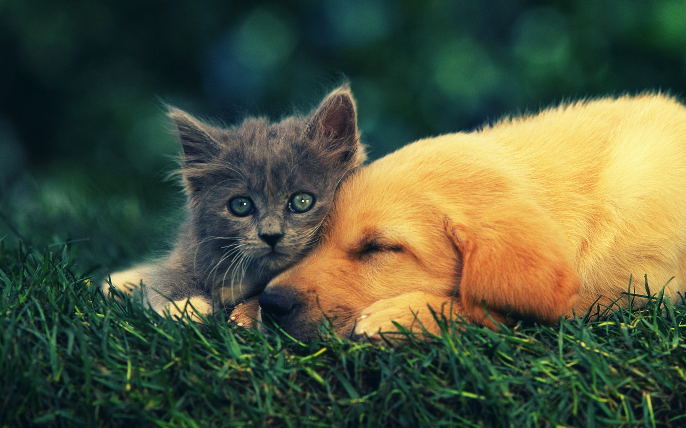

The cat is a small carnivorous mammal.It is the only domesticated species in the family Felidae and often referred to as the domestic cat to distinguish it from wild members of the family.The cat is either a house cat or a farm cat, which are pets, or a feral cat, which ranges freely and avoids human contact.A house cat is valued by humans for companionship and for its ability to hunt rodents. About 60 cat breeds are recognized by various cat registries.Cats are similar in anatomy to the other felid species, with a strong flexible body, quick reflexes, sharp teeth and retractable claws adapted to killing small prey. They are predators who are most active at dawn and dusk.
The scientific name Felis catus for the domestic cat was proposed by Carl Linnaeus in the 10th edition of Systema Naturae published in 1758. Felis catus domesticus was a scientific name proposed by Johann Christian Polycarp Erxleben in 1777.Felis daemon proposed by Konstantin Alekseevich Satunin in 1904 was a black cat specimen from the Transcaucasus, later identified as a domestic cat. In 2003, the International Commission on Zoological Nomenclature fixed the scientific name for the wildcat as F. silvestris. The same commission ruled that the domestic cat is a distinct taxon Felis catus.
Cats have seven cervical vertebrae (as do most mammals); 13 thoracic vertebrae (humans have 12); seven lumbar vertebrae (humans have five); three sacral vertebrae (as do most mammals, but humans have five); and a variable number of caudal vertebrae in the tail (humans have only vestigial caudal vertebrae, fused into an internal coccyx).The extra lumbar and thoracic vertebrae account for the cat's spinal mobility and flexibility. Attached to the spine are 13 ribs, the shoulder, and the pelvis. Unlike human arms, cat forelimbs are attached to the shoulder by free-floating clavicle bones which allow them to pass their body through any space into which they can fit their head.
The cat skull is unusual among mammals in having very large eye sockets and a powerful specialized jaw. Within the jaw, cats have teeth adapted for killing prey and tearing meat. When it overpowers its prey, a cat delivers a lethal neck bite with its two long canine teeth, inserting them between two of the prey's vertebrae and severing its spinal cord, causing irreversible paralysis and death. Compared to other felines, domestic cats have narrowly spaced canine teeth relative to the size of their jaw, which is an adaptation to their preferred prey of small rodents, which have small vertebrae. The premolar and first molar together compose the carnassial pair on each side of the mouth, which efficiently shears meat into small pieces, like a pair of scissors. These are vital in feeding, since cats' small molars cannot chew food effectively, and cats are largely incapable of mastication. Although cats tend to have better teeth than most humans, with decay generally less likely because of a thicker protective layer of enamel, a less damaging saliva, less retention of food particles between teeth, and a diet mostly devoid of sugar, they are nonetheless subject to occasional tooth loss and infection.
HOW DO "CATS" WALK? Cats, like dogs, are digitigrades. They walk directly on their toes, with the bones of their feet making up the lower part of the visible leg.Cats are capable of walking very precisely because, like all felines, they directly register; that is, they place each hind paw (almost) directly in the print of the corresponding fore paw, minimizing noise and visible tracks. This also provides sure footing for their hind paws when they navigate rough terrain. Unlike most mammals, when cats walk, they use a "pacing" gait; that is, they move the two legs on one side of the body before the legs on the other side. This trait is shared with camels and giraffes. As a walk speeds up into a trot, a cat's gait changes to be a "diagonal" gait, similar to that of most other mammals (and many other land animals, such as lizards): the diagonally opposite hind and fore legs move simultaneously.
Like almost all members of the Felidae, cats have protractable and retractable claws.In their normal, relaxed position, the claws are sheathed with the skin and fur around the paw's toe pads. This keeps the claws sharp by preventing wear from contact with the ground and allows the silent stalking of prey. The claws on the fore feet are typically sharper than those on the hind feet.Cats can voluntarily extend their claws on one or more paws. They may extend their claws in hunting or self-defense, climbing, kneading, or for extra traction on soft surfaces. Most cats have five claws on their front paws, and four on their rear paws.The fifth front claw (the dewclaw) is proximal to the other claws. More proximally is a protrusion which appears to be a sixth "finger". This special feature of the front paws, on the inside of the wrists, is the carpal pad, also found on the paws of big cats and dogs. It has no function in normal walking, but is thought to be an antiskidding device used while jumping. Some breeds of cats are prone to polydactyly (extra toes and claws).These are particularly common along the northeast coast of North America.
Outdoor cats are active both day and night, although they tend to be slightly more active at night.The timing of cats' activity is quite flexible and varied, which means house cats may be more active in the morning and evening, as a response to greater human activity at these times.Although they spend the majority of their time in the vicinity of their home, housecats can range many hundreds of meters from this central point, and are known to establish territories that vary considerably in size, in one study ranging from 7 to 28 hectares (17–69 acres).
Cats conserve energy by sleeping more than most animals, especially as they grow older. The daily duration of sleep varies, usually between 12 and 16 hours, with 13 and 14 being the average. Some cats can sleep as much as 20 hours. The term "cat nap" for a short rest refers to the cat's tendency to fall asleep (lightly) for a brief period. While asleep, cats experience short periods of rapid eye movement sleep often accompanied by muscle twitches, which suggests they are dreaming.
Although wildcats are solitary, the social behavior of domestic cats is much more variable and ranges from widely dispersed individuals to feral cat colonies that gather around a food source, based on groups of co-operating females.Within such groups, one cat is usually dominant over the others.Each cat in a colony holds a distinct territory, with sexually active males having the largest territories, which are about 10 times larger than those of female cats and may overlap with several females' territories.These territories are marked by urine spraying, by rubbing objects at head height with secretions from facial glands, and by defecation.Between these territories are neutral areas where cats watch and greet one another without territorial conflicts. Outside these neutral areas, territory holders usually chase away stranger cats, at first by staring, hissing, and growling and, if that does not work, by short but noisy and violent attacks. Despite some cats cohabiting in colonies, they do not have a social survival strategy, or a pack mentality and always hunt alone.
However, some pet cats are poorly socialized. In particular, older cats may show aggressiveness towards newly arrived kittens, which may include biting and scratching; this type of behavior is known as feline asocial aggression.

Though cats and dogs are often characterized as natural enemies, they can live together if correctly socialized. Life in proximity to humans and other domestic animals has led to a symbiotic social adaptation in cats, and cats may express great affection toward humans or other animals. Ethologically, the human keeper of a cat may function as a sort of surrogate for the cat's mother,and adult housecats live their lives in a kind of extended kittenhood, a form of behavioral neoteny. The high-pitched sounds housecats make to solicit food may mimic the cries of a hungry human infant, making them particularly difficult for humans to ignore. Domestic cats' scent rubbing behavior towards humans or other cats is thought to be a feline means for social bonding.
Domestic cats use many vocalizations for communication, including purring, trilling, hissing, growling/snarling, grunting, and several different forms of meowing. By contrast, feral cats are generally silent.Their types of body language, including position of ears and tail, relaxation of the whole body, and kneading of the paws, are all indicators of mood. The tail and ears are particularly important social signal mechanisms in cats;for example, a raised tail acts as a friendly greeting, and flattened ears indicates hostility. Tail-raising also indicates the cat's position in the group's social hierarchy, with dominant individuals raising their tails less often than subordinate animals.Nose-to-nose touching is also a common greeting and may be followed by social grooming, which is solicited by one of the cats raising and tilting its head.
Female cats are seasonally polyestrous, which means they may have many periods of heat over the course of a year, the season beginning in spring and ending in late autumn. Heat periods occur about every two weeks and last about 4 to 7 days.[182] Multiple males will be attracted to a female in heat. The males will fight over her, and the victor wins the right to mate. At first, the female rejects the male, but eventually the female allows the male to mate. The female utters a loud yowl as the male pulls out of her because a male cat's penis has a band of about 120–150 backwards-pointing penile spines, which are about 1 mm long; upon withdrawal of the penis, the spines rake the walls of the female's vagina, which acts to induce ovulation. This act also occurs to clear the vagina of other sperm in the context of a second (or more) mating, thus giving the later males a larger chance of conception.
After mating, the female cleans her vulva thoroughly. If a male attempts to mate with her at this point, the female attacks him. After about 20 to 30 minutes, once the female is finished grooming, the cycle will repeat.
The domestic cat is a cosmopolitan species and occurs across much of the world. It can live on the highest mountains and in the hottest deserts.It is adaptable and now present on all continents except Antarctica, and on 118 of the 131 main groups of islands—even on isolated islands such as the Kerguelen Islands.
The domestic cat's ability to thrive in almost any terrestrial habitat has led to its designation as one of the world's most invasive species. As it is little altered from the wildcat, it can readily interbreed with the wildcat. This hybridization poses a danger to the genetic distinctiveness of some wildcat populations, particularly in Scotland and Hungary and possibly also the Iberian Peninsula.
Feral cats can live in forests, grasslands, tundra, coastal areas, agricultural land, scrublands, urban areas, and wetlands.Their habitats include small islands with no human inhabitants.The close relatives of the domestic cat, the African wildcat (Felis lybica) and the sand cat (F. margarita) both inhabit desert environments.Domestic cats still show similar adaptations and behaviors.
In ancient Egypt, cats were sacred animals, with the goddess Bast often depicted in cat form, sometimes taking on the war-like aspect of a lioness. Killing a cat was absolutely forbidden and the Greek historian Herodotus reports that, whenever a household cat died, the entire family would mourn and shave their eyebrows. Families took their dead cats to the sacred city of Bubastis, where they were embalmed and buried in sacred repositories.The earliest unmistakable evidence of the Greeks having domestic cats comes from two coins from Magna Graecia dating to the mid-fifth century BC showing Iokastos and Phalanthos, the legendary founders of Rhegion and Taras respectively, playing with their pet cats.
House cats seem to have been extremely rare among the ancient Greeks and Romans;Herodotus expressed astonishment at the domestic cats in Egypt, because he had only ever seen wildcats. Even during later times, weasels were far more commonly kept as pets and weasels, not cats, were seen as the ideal rodent-killers. The usual ancient Greek word for "cat" was ailouros, meaning "thing with the waving tail", but this word could also be applied to any of the "various long-tailed carnivores kept for catching mice". Cats are rarely mentioned in ancient Greek literature, but Aristotle does remark in his History of Animals that "female cats are naturally lecherous." The Greeks later syncretized their own goddess Artemis with the Egyptian goddess Bast, adopting Bastet's associations with cats and ascribing them to Artemis.In Ovid's Metamorphoses, when the deities flee to Egypt and take animal forms, the goddess Diana (the Roman equivalent of Artemis) turns into a cat. Cats eventually displaced ferrets as the pest control of choice because they were more pleasant to have around the house and were more enthusiastic hunters of mice.During the Middle Ages, many of Artemis's associations with cats were grafted onto the Virgin Mary.Cats are often shown in icons of Annunciation and of the Holy Family and, according to Italian folklore, on the same night that Mary gave birth to Jesus, a virgin cat in Bethlehem gave birth to a kitten. Domestic cats were spread throughout much of the rest of the world during the Age of Discovery, as ships' cats were carried on sailing ships to control shipboard rodents and as good-luck charms.
The domestic cat is a cosmopolitan species and occurs across much of the world. It can live on the highest mountains and in the hottest deserts.It is adaptable and now present on all continents except Antarctica, and on 118 of the 131 main groups of islands—even on isolated islands such as the Kerguelen Islands.
The domestic cat's ability to thrive in almost any terrestrial habitat has led to its designation as one of the world's most invasive species. As it is little altered from the wildcat, it can readily interbreed with the wildcat. This hybridization poses a danger to the genetic distinctiveness of some wildcat populations, particularly in Scotland and Hungary and possibly also the Iberian Peninsula.